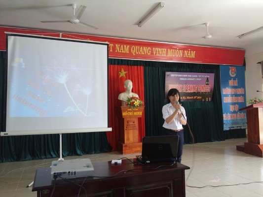
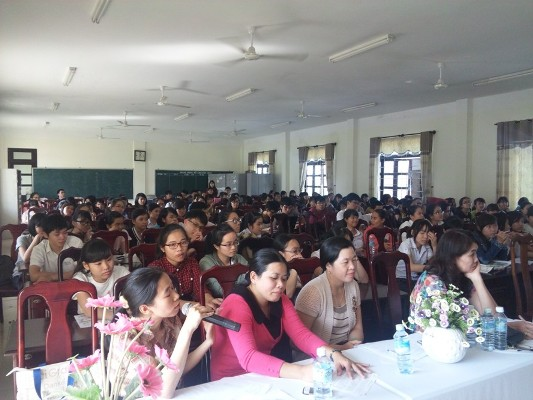
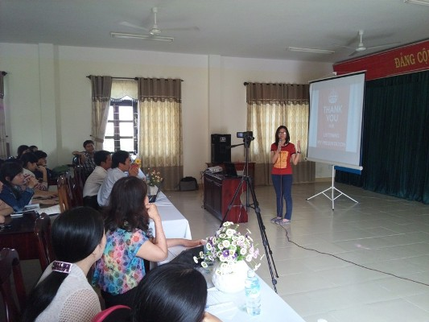
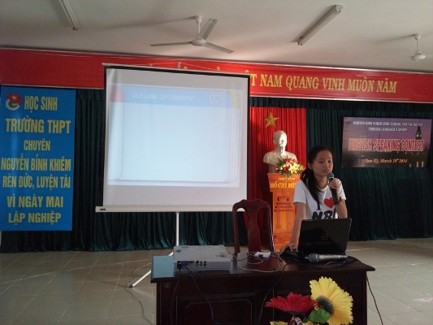
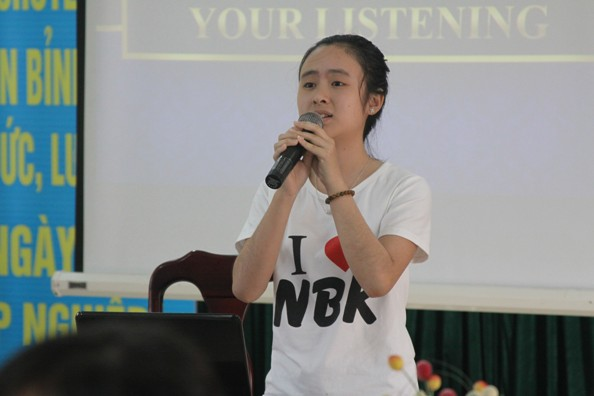
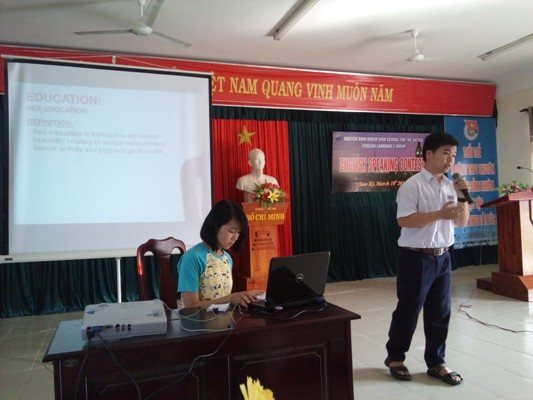
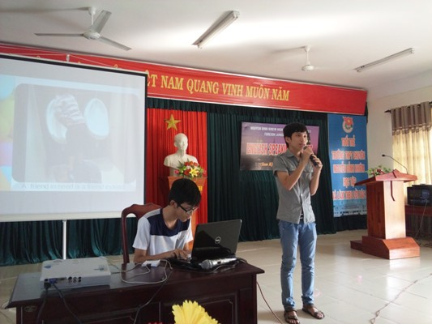
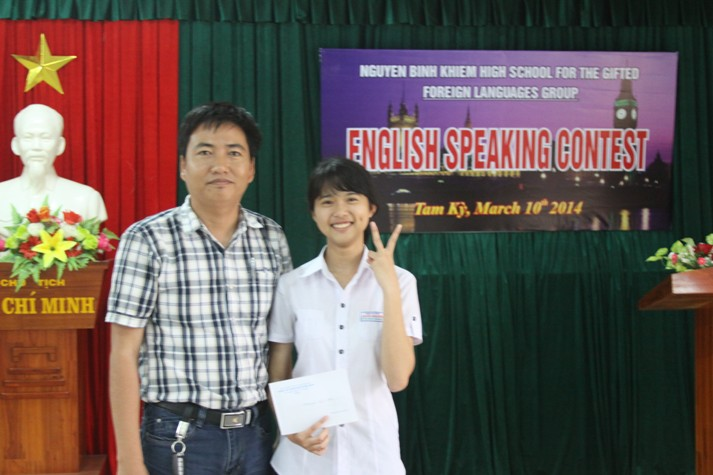

Kết quả chung kết hùng biện Tiếng Anh tại trường THPT chuyên Nguyễn Bỉnh Khiêm

Lần cập nhật cuối lúc Thứ bảy, 15 Tháng 3 2014 08:21 Viết bởi Administrator Thứ bảy, 15 Tháng 3 2014 08:05
Vào lúc 14h00 ngày 10/3/2014, tại trường THPT chuyên Nguyễn Bỉnh Khiêm đã diễn ra vòng chung kết cuộc thi Hùng biện tiếng Anh (HBTA) cấp trường năm học 2013 – 2014. Đến dự và động viên các thí sinh có thầy Châu Văn Thọ - Bí thư Đoàn trường, Ban Giám khảo là các thầy cô tiếng Anh trong tổ Ngoại ngữ.

Đây là năm đầu tiên cuộc thi HBTA do Sở GD & ĐT Quảng Nam hướng dẫn tổ chức nhằm mục đích đánh giá công tác dạy và học tiếng Anh theo hướng phát triển năng lực giao tiếp của học sinh, đáp ứng yêu cầu hướng dẫn đổi mới dạy và học ngoại ngữ của Bộ GD&ĐT. Hoạt động này còn tạo sân chơi bổ ích, sinh động để học sinh toàn trường có cơ hội giao lưu học hỏi, phát triển năng lực thuyết trình, diễn đạt các ý tưởng bằng tiếng Anh dưới nhiều hình thức nhằm đa dạng hóa các hình thức học tập ngoại ngữ. Nội dung các hoạt động được tổ chức trong cuộc thi là những định hướng cho công tác đổi mới phương pháp giảng dạy ngoại ngữ theo đường hướng giao tiếp được tiếp tục thực hiện trong thời gian tới.

Chủ đề hội thi năm nay xoay quanh các nội dung như: Môi trường (Environment), Tình bạn (Friendship), Vui chơi giải trí (Entertainment), Education (Giáo dục), Giao thông (Traffic), Nghề nghiệp tương lai (Future Jobs). Mỗi thí sinh đã chọn cách thức tiếp cận chủ đề của hội thi khác nhau để trình bày đề tài và trả lời câu hỏi của Ban giám khảo. Các thí sinh đã thể hiện năng lực nói tiếng Anh và kỹ năng thuyết trình qua phần giới thiệu bản thân, trường, lớp và phần thi hùng biện. Kịch bản thuyết trình sáng tạo và kỹ năng trình bày tự nhiên của nhiều thí sinh đã chinh phục người xem và Ban giám khảo.


Xen kẽ giữa các nội dung thi là chương trình giao lưu văn nghệ với nhiều tiết mục sinh động, hấp dẫn. Ngoài ra còn có phần trả lời nhanh các câu hỏi vui có thưởng đã cuốn hút được nhiều học sinh tham gia.

Vòng chung kết cuộc thi HBTA của trường THPT chuyên Nguyễn Bỉnh Khiêm năm nay ngoài 6 thí sinh chuyên Anh còn có 2 gương mặt đến từ các khối chuyên Hóa và Lý. Các thí sinh này cũng đã đạt được giải cao và để lại ấn tượng tốt cho Ban giám khảo và khán giả.


Giải nhất cuộc thi HBTA cấp trường năm học 2013-2014 thuộc về thí sinh Hồ Thị Hoàng Phương- lớp 11 chuyên Anh. Hai giải nhì thuộc về thí sinh Phạm Nguyễn Yên Bình – lớp 12 chuyên Anh và Dương Thanh Hải – lớp 11 chuyên Hóa. Hai giải ba được trao cho thí sinh Nguyễn Thị Minh Nguyệt – lớp 12 chuyên Anh và Dương Thị Hoài Phương – lớp 10 chuyên Anh và ba thí sinh Huỳnh Thúy Hằng – lớp 10 chuyên Anh, Trần Thị Như Oanh – lớp 11 chuyên Anh, Huỳnh Ngọc Trọng – lớp 12 chuyên Lý đồng đạt giải khuyến khích.

(Tin bài: Lê Viết Hà – Tổ Ngoại ngữ)
- 05/02/2015 13:54 - Kết quả kỳ thi chọn học sinh giỏi quốc gia lớp 12 …
- 10/12/2014 00:00 - Từ chuyến đi Hội thảo Vĩnh Phúc
- 13/11/2014 07:42 - Trường THPT chuyên Nguyễn Bỉnh Khiêm - Quảng Nam t…
- 30/10/2014 10:32 - Đại hội Đoàn trường THPT chuyên Nguyễn Bỉnh Khiêm …
- 05/09/2014 00:00 - Trường THPT chuyên Nguyễn Bỉnh Khiêm tổ chức lễ kh…
- 24/01/2014 11:42 - Kết quả kỳ thi học sinh giỏi quốc gia năm học 2014
- 08/12/2013 14:43 - Lịch kiểm tra học kỳ I năm học 2013-2014
- 05/12/2013 14:51 - Tổng hợp một số chuyên đề các môn chuyên của các t…
- 18/10/2013 09:26 - Đại hội đại biểu Đoàn TNCS Hồ Chí Minh trường THPT…
- 09/10/2013 13:58 - Kết quả thi chọn học sinh giỏi lớp 12 năm 2013-201…